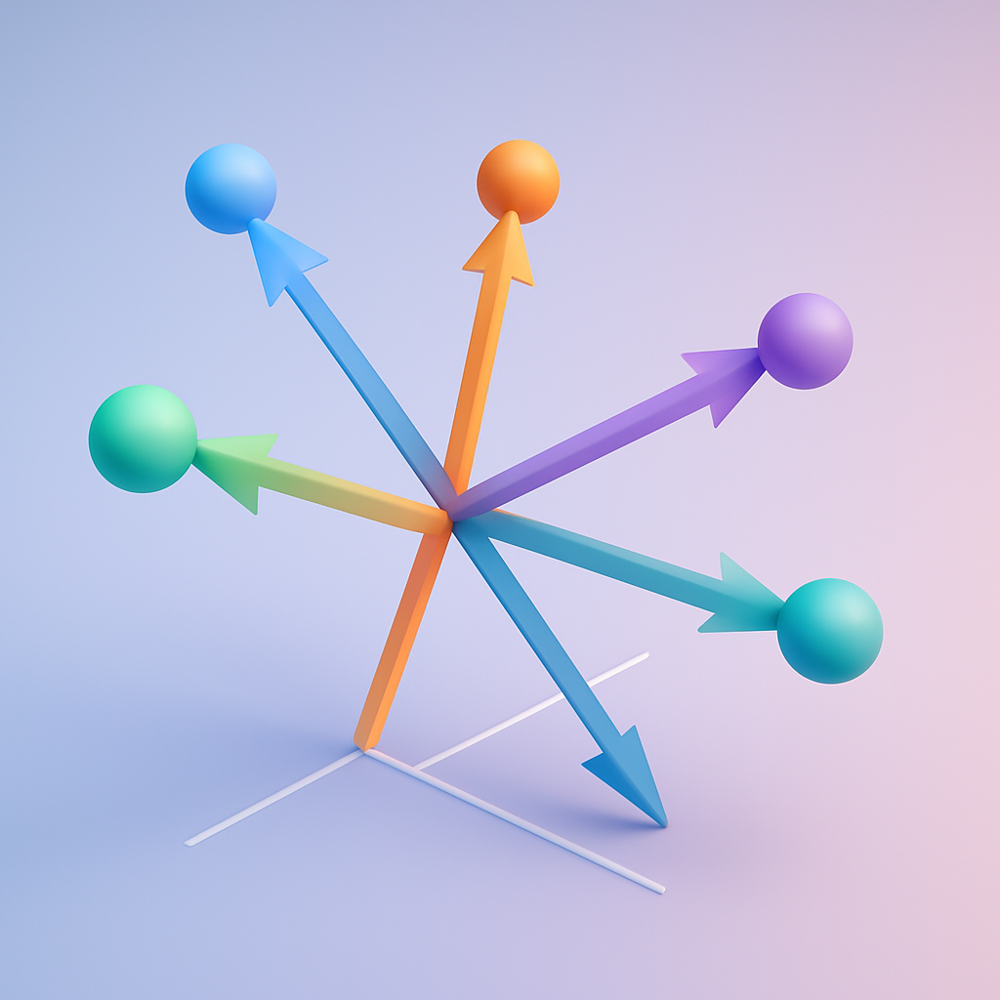

GPT-3 → Word2Vec : 단어 의미 표현 여정
🚀 Intro
GPT-3 — A first step on the path to universal models
“언어 모델은 결국 의미를 어떻게 담아낼까?”
1️⃣ 의미를 표현하는 고전적 방식
• Webster 사전 정의 (발췌)
- the idea that is represented by a word
- … signifier ↔ signified (denotational semantics)
• NLP 전통 : 단어 = 독립 기호
| 단어 | one-hot 벡터 예시 |
|---|---|
| motel | [0 … 0 1 0 …] |
| hotel | [0 … 1 0 0 …] |
문제
- 벡터 차원 = 어휘 크기 → 💥 수십만 차원
- one-hot 은 항상 직교 → 유사도 0
→ “Seattle motel” 검색 시 hotel 문서를 놓친다
2️⃣ 🌐 Distributional Semantics
“You shall know a word by the company it keeps”
- Context window m : 중심 단어
w_t주변 ± m 토큰 - 단어
w출현 ➜ 이웃 토큰 집합이 의미 벡터를 만든다
… government debt problems turning into banking crises …
▲── context
3️⃣ Word Embedding 개념
- Dense 실수 벡터
v_w ∈ ℝⁿ - “비슷한 문맥 ↔ 비슷한 벡터” (내적 ↑, cos θ ↑)
예)
banking = [ 0.286, 0.792, −0.177, … ]ᵀ
Synonyms ≈ 가까운 벡터
king − man + woman → queen 같은 벡터 연산도 가능
4️⃣ Word2Vec : 학습 아이디어
- 말뭉치 전체 토큰 시퀀스
w₁…w_T - 각 단어에 중심 벡터
v_c/ 외부 벡터u_o쌍 배정 - 위치
t에서 중심단어c=w_t
→ contexto ∈ window의 예측 확률 최대화
4-1. Softmax 확률
[ P(o\mid c)= \frac{\exp(u_o^{!\top}v_c)} {\sum_{w\in V}\exp(u_w^{!\top}v_c)} ]
4-2. 전체 목표 (Skip-gram)
[ \mathcal L(\theta)= -\frac1T\sum_{t=1}^{T} \sum_{\substack{-m\le j\le m\ j\ne0}} \log P(w_{t+j}\mid w_t;\theta) ]
(경사 하강 → v, u 업데이트)
💻 Word2Vec (Skip-gram + NegSampling) 초간단 코드
import torch
import torch.nn as nn
class SkipGramNS(nn.Module):
def __init__(self, vocab_size: int, dim: int):
super().__init__()
self.in_embed = nn.Embedding(vocab_size, dim) # v_c
self.out_embed = nn.Embedding(vocab_size, dim) # u_o
def forward(self, center, pos, neg):
v_c = self.in_embed(center) # [B, D]
u_pos = self.out_embed(pos) # [B, K, D]
u_neg = self.out_embed(neg) # [B, Kneg, D]
# positive & negative loss
pos_score = (u_pos @ v_c.unsqueeze(2)).squeeze() .sigmoid().log()
neg_score = (u_neg @ (-v_c).unsqueeze(2)).squeeze() .sigmoid().log()
loss = -(pos_score.sum() + neg_score.sum()) / center.size(0)
return loss
📝 핵심 요약
| Key Idea | 한 줄 설명 |
|---|---|
| One-hot 한계 | 차원↑↑ & 유사도 0 |
| Distributional Hypothesis | “같은 문맥 → 비슷한 의미” |
| Word2Vec 학습 | 중심-문맥 쌍 확률 ↑ → 벡터가 의미 공간 형성 |
| Embedding 효용 | 검색·추천·유추 king − man + woman ≈ queen |
결국: 텍스트 자체가 단어 의미를 학습시킨다 → GPT-시리즈 같은 거대 LM의 토대 🚀